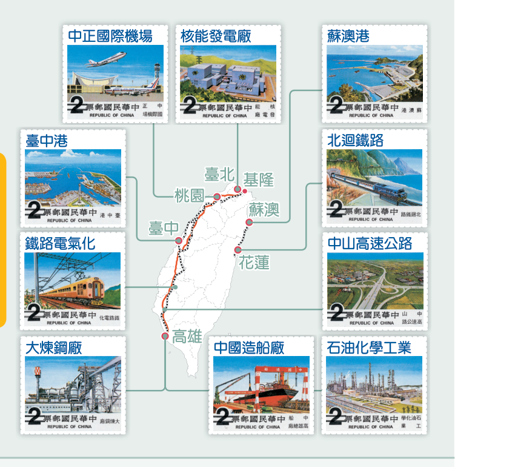

📚 戰後臺灣的經濟與社會
114 國中社會 1 下歷史｜第 6 章｜互動 CAI 學習網頁
🏭
從農業到科技島的蛻變
二次大戰後，臺灣經濟在政府與人民共同努力下逐漸起飛，從戰後的混亂走向經濟奇蹟；社會與文化也隨之變遷，邁向多元開放。然而在經濟掛帥的發展過程中，也產生環境、生態、文化與勞工權益等問題，值得我們省思。
🎯 學習目標
- 了解戰後臺灣經濟發展的五個階段與核心政策
- 認識十大建設的背景、項目與影響
- 分析戰後臺灣社會變遷：都市化、社會運動與族群關係
- 理解文化變遷的四個階段與多元文化主流
- 透過互動遊戲複習重點，培養歷史時序感

💰
經濟五階段
🏗️
十大建設
🌐
社會文化
🎮
互動遊戲
時間軸
戰後臺灣經濟發展的五個階段
互動地圖
十大建設分佈圖
點擊地圖上的圓點，查看各項建設的名稱、類別與說明。

🗺️ 先點選左側地圖圓點
十大建設可區分為：
交通運輸（6項）
重工業（3項）
能源（1項）
文化變遷
戰後臺灣文化變遷四階段
社會變遷
社會變遷的三大面向

🏙️ 都市化與鄉村問題
都市工作機會多，吸引人口集中；農村、部落、山村與漁村則面臨人口外移與老化。

📢 社會運動興起
解嚴前社運受政治掌控；解嚴後環保、勞工權益等議題逐漸受到重視。
族群關係
🪶 原住民
政府曾稱「山胞」並要求漢名登記。解嚴後推動正名與自治，民國 83 年修憲改稱「原住民」。

🎋 客家族群
提倡母語運動與傳統文化傳承，維護客家語言與生活文化。
🌍 新住民與國際移工
近年來使臺灣文化更加豐富多樣，多元文化與族群平等成為主流。
課後閱讀
往事如歌：流行歌曲與時代
| 年代 | 曲風／現象 | 代表 |
|---|---|---|
| 民國 40 年代 | 上海／香港風格，臺語歌受壓抑 | 《綠島小夜曲》、《春風吻上我的臉》 |
| 民國 50 年代 | 西洋流行歌曲風行 | 貓王等西洋歌曲 |
| 民國 60 年代 | 校園民歌「唱自己的歌」 | 《橄欖樹》、《捉泥鰍》、《龍的傳人》 |
| 民國 70 年代以後 | 多元音樂、新臺語歌、偶像團體 | 林強、伍佰、小虎隊、五月天、原住民音樂 |
🧩 時光重組：把經濟階段拖到正確年代
拖曳下方卡片，依照「民國」順序放入正確空格。
⏱️ 時間：0 秒
✅ 正確：0/6
🎯 政策分類：把口號拖進正確時期
將每個政策口號拖入對應的經濟發展時期。
✅ 正確：0/7
📦 口號池
🃏 翻翻樂：找出配對的人物與事件
每次翻開兩張牌，配對相同主題的照片／說明。
🔄 翻牌次數：0
✅ 配對：0/6
一、經濟發展五階段
| 時期 | 民國 | 政策名稱 | 核心內容 |
|---|---|---|---|
| 貨幣與土地改革 | 38年起 | 穩定經濟基礎 | 發行新臺幣、三七五減租、公地放領、耕者有其田 |
| 進口替代 | 40年代 | 保護國內工業 | 管制進口、以農業培養工業、發展輕工業 |
| 出口導向 | 50年代 | 外銷為主 | 設立加工出口區（高雄）、出口食品成衣等輕工業產品 |
| 十大建設 | 60年代 | 重工業與基礎建設 | 能源危機後推動，含交通、重工業、核能發電廠 |
| 產業升級 | 70年代 | 高科技產業 | 新竹科學園區發展資訊電子業 |
| 自由化與國際化 | 80年代起 | 全球布局 | 加入 APEC、WTO，南向政策，產業轉型升級 |
二、文化變遷四階段
| 時期 | 文化主流 | 背景與內容 |
|---|---|---|
| 民國 40 年代 | 中華文化 | 清除日本影響、提倡中華文化、禁說方言 |
| 民國 50 年代 | 美國流行文化 | 韓戰後美援傳入、美軍電臺、西洋歌曲風行 |
| 民國 60 年代 | 鄉土文學 | 外交挫敗→回歸本土，黃春明、王拓等作家 |
| 民國 70 年代以後 | 多元文化 | 政治社會開放，本土與原住民文化受重視 |
三、美援的影響
| 面向 | 內容 |
|---|---|
| 外交軍事 | 臺灣納入美國反共防衛體系 |
| 經濟 | 棉紗配給（社頭襪子王國）、貸款建電廠、購入火車頭，配合進口替代政策 |
| 社會文化 | 美軍電臺播放西洋歌曲，中美斷交後改為 ICRT |